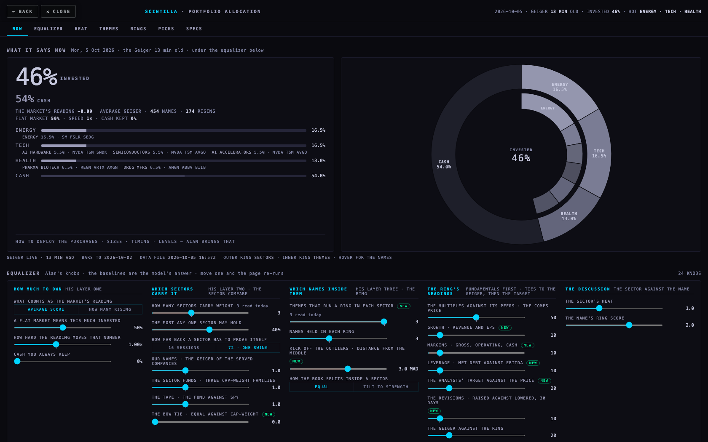
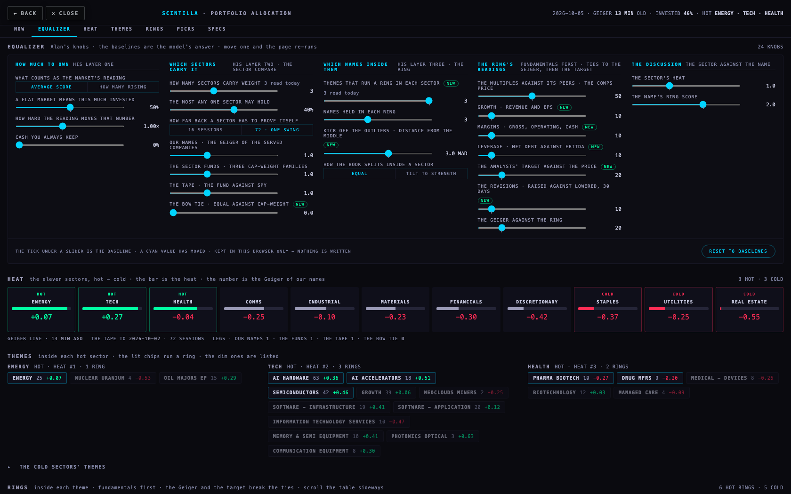
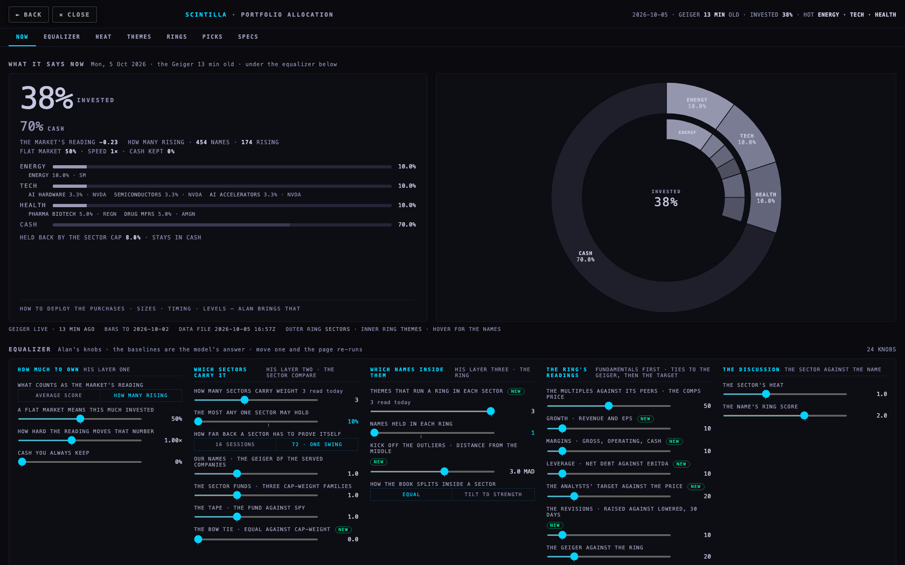
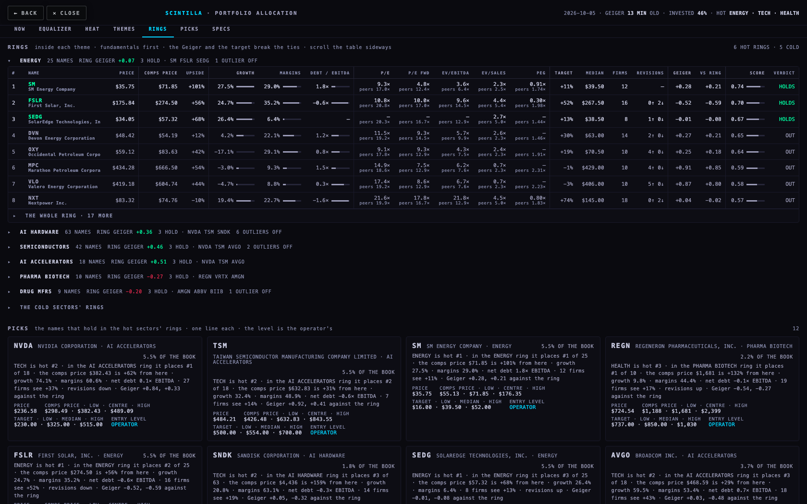
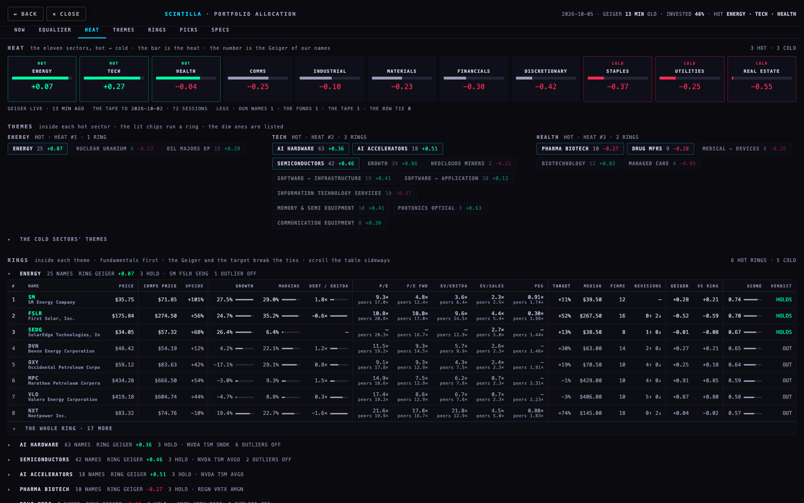
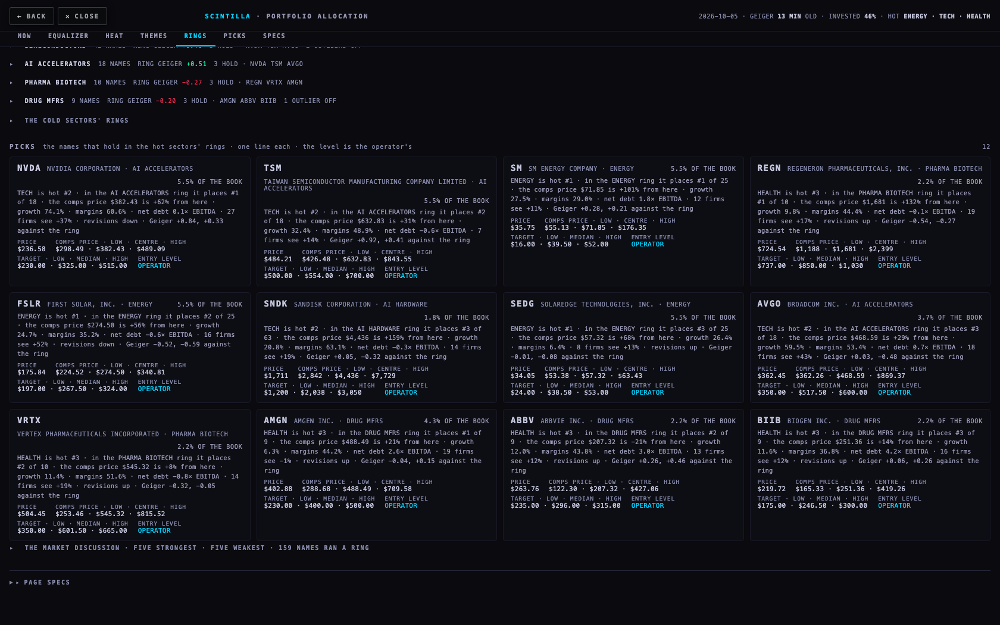
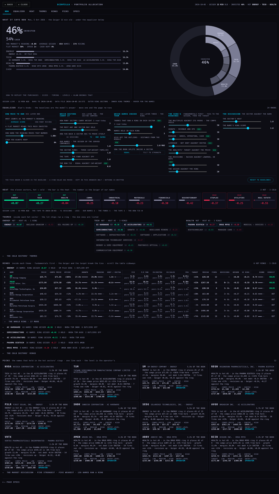
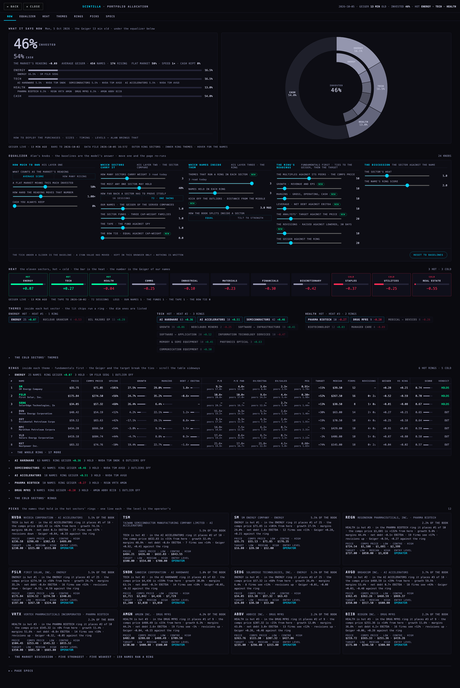
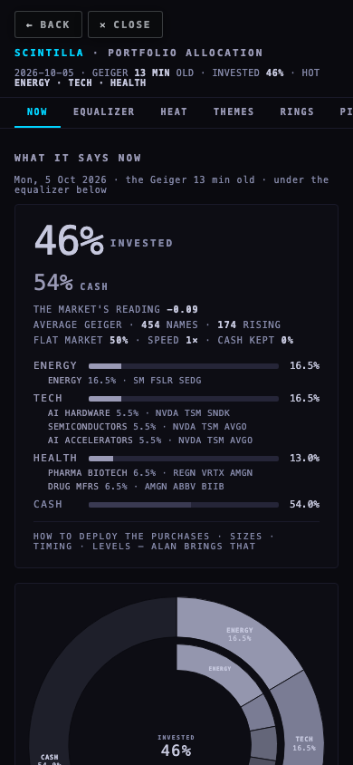
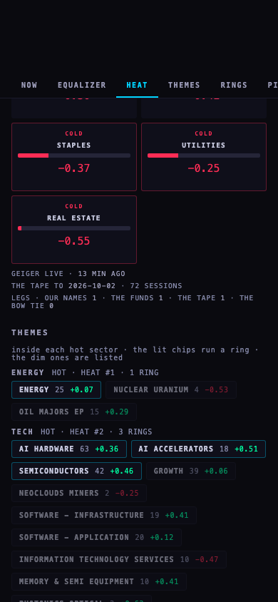

The page now opens on the answer: 46% invested, 54% cash as of 2026-10-05 (the Geiger read 16:53Z), then the sector percentages — ENERGY 16.5% · TECH 16.5% · HEALTH 13.0% — the themes inside them, the ring inside each theme, and the names. Your knobs sit under the first screen; every one has its baseline marked and a RESET; moving one re-runs the page in the browser. Pie charts: sectors outside, themes inside, cash as the dark slice. How to deploy the purchases is not built — you bring that.










| knob | what it does |
|---|---|
| HOW MUCH TO OWN · What counts as the market's reading | AVERAGE SCORE = the mean live Geiger of every served company (454 today); HOW MANY RISING = the share reading above zero, scaled −1 … +1. Baseline AVERAGE SCORE. |
| HOW MUCH TO OWN · A flat market means this much invested | the anchor: the invested share when the reading is zero. Baseline 50 %. |
| HOW MUCH TO OWN · How hard the reading moves that number | at 1.0× a full reading (+1.0) adds 50 points to the anchor, −1.0 takes 50 off. Baseline 1.0×. |
| HOW MUCH TO OWN · Cash you always keep | the invested share never passes 100 minus this. Baseline 0 %. |
| WHICH SECTORS CARRY IT · How many sectors carry weight | the top N by heat are HOT and hold the book; the bottom N are COLD. Baseline 3 (3 read today; a higher N needs the next read for its rings). |
| WHICH SECTORS CARRY IT · The most any one sector may hold | a cap on a sector's share of the book; the excess goes to the other hot sectors, what cannot be placed stays in cash and is printed. Baseline 40 %. |
| WHICH SECTORS CARRY IT · How far back a sector has to prove itself | the tape leg uses the sector fund's 72-session return against SPY (one swing cycle) or the 16-session one. Baseline 72. |
| WHICH SECTORS CARRY IT · Our names · the sector funds · the tape · the bow tie | the four legs of the heat: each sector's rank on each leg is averaged with these weights. Baselines 1 · 1 · 1 · 0 (the bow tie is printed on hover, ranked only above 0 — NEW as a weight). |
| WHICH NAMES INSIDE THEM · Themes that run a ring in each sector | the K soundest themes of each hot and cold sector. Baseline 3 (3 read today). NEW. |
| WHICH NAMES INSIDE THEM · Names held in each ring | how many survive the ring and go to the picks. Baseline 3. |
| WHICH NAMES INSIDE THEM · Kick off the outliers | a member whose comps upside sits further than this many MADs from the ring's middle sits out of the ranking (C5's rule; 0 = off). Baseline 3 MAD. NEW. |
| WHICH NAMES INSIDE THEM · How the book splits inside a sector | EQUAL: rings and names split evenly; TILT TO STRENGTH: by their scores. Baseline EQUAL. |
| THE RING'S READINGS · The multiples against its peers | C5's way-C comps price (the business-first peers' implied prices, outliers out) against today's price. Baseline 50. |
| THE RING'S READINGS · Growth | the mean of revenue growth TTM, revenue growth next FY and EPS growth next FY. Baseline 10. NEW. |
| THE RING'S READINGS · Margins | the mean of gross, operating and free-cash-flow margin. Baseline 10. NEW. |
| THE RING'S READINGS · Leverage | net debt / EBITDA, lower is better (blank when EBITDA is not positive). Baseline 10. NEW. |
| THE RING'S READINGS · The analysts' target against the price | the clean consensus (each firm's newest note inside 183 days, 3 firms at least) against today's price. Baseline 20. NEW. |
| THE RING'S READINGS · The revisions | raised minus lowered over the firms that moved in the last 30 days. Baseline 10. NEW. |
| THE RING'S READINGS · The Geiger against the ring | the name's live Geiger minus the ring's mean — oversold, but less than the others. Baseline 20. Ties on the score go to this, then to the target. |
| THE DISCUSSION · The sector's heat · the name's ring score | the full chain for the five strongest and five weakest: sector heat × 1 + ring score × 2. Baselines 1 · 2. |
Your knobs from the September allocation page keep their names and groups (HOW MUCH TO OWN · WHICH SECTORS CARRY IT · WHICH NAMES INSIDE THEM); the ring's weights are the new chain's and are marked NEW. The Hub's own OPERATOR · EQUALIZER (timeframe × family weights, saved to operator_weights) shapes the Geiger itself and is not touched; this page's equalizer is kept in your browser only — nothing is written.
| name | of the book | why, in one line |
|---|---|---|
| NVDA | 5.5% | NVIDIA Corporation · TECH is hot #2 · in the AI ACCELERATORS ring it places #1 of 18 · the comps price $382.43 is +62% from here · growth 74.1% · margins 60.6% · net debt 0.1× EBITDA · 27 firms see +37% · revisions down · Geiger +0.84, +0.33 against the ring |
| TSM | 5.5% | Taiwan Semiconductor Manufacturing Company Limited · TECH is hot #2 · in the AI ACCELERATORS ring it places #2 of 18 · the comps price $632.83 is +31% from here · growth 32.4% · margins 48.9% · net debt -0.6× EBITDA · 7 firms see +14% · Geiger +0.92, +0.41 against the ring |
| SM | 5.5% | SM Energy Company · ENERGY is hot #1 · in the ENERGY ring it places #1 of 25 · the comps price $71.85 is +101% from here · growth 27.5% · margins 29.0% · net debt 1.8× EBITDA · 12 firms see +11% · Geiger +0.28, +0.21 against the ring |
| REGN | 2.2% | Regeneron Pharmaceuticals, Inc. · HEALTH is hot #3 · in the PHARMA BIOTECH ring it places #1 of 10 · the comps price $1,681 is +132% from here · growth 9.8% · margins 44.4% · net debt -0.1× EBITDA · 19 firms see +17% · revisions up · Geiger −0.54, −0.27 against the ring |
| FSLR | 5.5% | First Solar, Inc. · ENERGY is hot #1 · in the ENERGY ring it places #2 of 25 · the comps price $274.50 is +56% from here · growth 24.7% · margins 35.2% · net debt -0.6× EBITDA · 16 firms see +52% · revisions down · Geiger −0.52, −0.59 against the ring |
| SNDK | 1.8% | Sandisk Corporation · TECH is hot #2 · in the AI HARDWARE ring it places #3 of 63 · the comps price $4,436 is +159% from here · growth 20.8% · margins 63.1% · net debt -0.3× EBITDA · 14 firms see +19% · Geiger +0.05, −0.32 against the ring |
| SEDG | 5.5% | SolarEdge Technologies, Inc. · ENERGY is hot #1 · in the ENERGY ring it places #3 of 25 · the comps price $57.32 is +68% from here · growth 26.4% · margins 6.4% · 8 firms see +13% · revisions up · Geiger −0.01, −0.08 against the ring |
| AVGO | 3.7% | Broadcom Inc. · TECH is hot #2 · in the AI ACCELERATORS ring it places #3 of 18 · the comps price $468.59 is +29% from here · growth 59.5% · margins 53.4% · net debt 0.7× EBITDA · 18 firms see +43% · Geiger +0.03, −0.48 against the ring |
| VRTX | 2.2% | Vertex Pharmaceuticals Incorporated · HEALTH is hot #3 · in the PHARMA BIOTECH ring it places #2 of 10 · the comps price $545.32 is +8% from here · growth 11.4% · margins 51.6% · net debt -0.8× EBITDA · 14 firms see +19% · revisions up · Geiger −0.32, −0.05 against the ring |
| AMGN | 4.3% | Amgen Inc. · HEALTH is hot #3 · in the DRUG MFRS ring it places #1 of 9 · the comps price $488.49 is +21% from here · growth 6.3% · margins 44.2% · net debt 2.6× EBITDA · 19 firms see −1% · revisions up · Geiger −0.04, +0.15 against the ring |
| ABBV | 2.2% | AbbVie Inc. · HEALTH is hot #3 · in the DRUG MFRS ring it places #2 of 9 · the comps price $207.32 is −21% from here · growth 12.0% · margins 43.8% · net debt 3.0× EBITDA · 13 firms see +12% · revisions up · Geiger +0.26, +0.46 against the ring |
| BIIB | 2.2% | Biogen Inc. · HEALTH is hot #3 · in the DRUG MFRS ring it places #3 of 9 · the comps price $251.36 is +14% from here · growth 11.6% · margins 36.8% · net debt 4.2× EBITDA · 16 firms see +12% · revisions up · Geiger +0.06, +0.26 against the ring |
The rings today: ENERGY 25 names, holds SM FSLR SEDG, 1 outlier off (RUN) · AI HARDWARE 63 names, holds NVDA TSM SNDK, 6 outliers off (MU QCOM SIMO SMCI TEL VSAT) · SEMICONDUCTORS 42 names, holds NVDA TSM AVGO, 2 outliers off (MU SIMO) · AI ACCELERATORS 18 names, holds NVDA TSM AVGO · PHARMA BIOTECH 10 names, holds REGN VRTX AMGN · DRUG MFRS 9 names, holds AMGN ABBV BIIB, 1 outlier off (BMY) · STAPLES 19 names, holds ADM USFD TGT, 1 outlier off (KR) · REGULATED ELECTRIC 21 names, holds ES FE ED, 1 outlier off (PCG) · UTILITIES 30 names, holds ES NRG FE, 4 outliers off (AMRC PCG RUN SEDG) · AI POWER 23 names, holds CEG ES VST, 2 outliers off (BE PCG) · REAL ESTATE 14 names, holds RHP VICI SPG, 1 outlier off (CBRE).
The market discussion (the full chain, 159 names ran a ring): strongest NVDA · TSM · SM · FSLR · SEDG; weakest WELL · LNT · WEC · PLD · ATO.
deliverables/20261005/pa1-allocation/index.html (the page), chain.mjs (the arithmetic, pure; the tests import it), build.mjs (the data read, 13 s, reads only, now with every ring member's fundamentals and its peers' medians), data-latest.json (2026-10-05T16:57:50.965Z), METHOD.md (PA1 + the PA2 section), SCHEDULE.md + jobs/allocation-data.yml (the nightly + hourly rebuild, staged, not active), shots-pa2.mjs (the headless pictures), tests/pa2-allocation-20261005.test.mjs (10 tests) and PA1's 11 kept. The ALLOCATION master tab in index.html now points at this page; the previous page stays at /allocation/ until 12 Oct 2026 and is linked from the page's PAGE SPECS.
Headless Chromium (never a window), the branch served under the Hub's hostname, every non-GET answered locally: 0 writes, 0 page errors. 1680 × 1050: 2976 px (2.83 screens), no sideways scroll, smallest text 8 px, 27 knob controls (21 sliders, 6 chips), 10 pie arcs, 11 heat cards, 11 rings, 21 columns in the open ring, no developer codes in the content. A slider moved: the sector cap at 10 % → ENERGY 10.0 · TECH 10.0 · HEALTH 10.0, 16 % held back into cash; one name held per ring → NVDA SM REGN AMGN; HOW MANY RISING → 38 % invested; RESET → 46 % and 12 picks again (restores: true). The open ring folds to 8 rows and unfolds to 25. 1920 × 1080: 2866 px (2.65 screens). Phone 390: 7533 px, no sideways scroll of the page (the tables scroll inside).
Nothing deployed; nothing written to a table; the schedule is staged, not active; the old page's other knobs (the search, the favourites, the tranches, the liquidity and earnings guards) are not wired — they belong to the deployment Alan brings. The five-condition ladder of the July sheet is not rebuilt. A higher "sectors carry weight" or "themes per sector" than 3 needs a new data read to show its rings.
Branch hub/pa1-allocation-20261005 · deliverables/20261005/pa1-allocation/ · this report is built by report-pa2.mjs from the data and the facts.